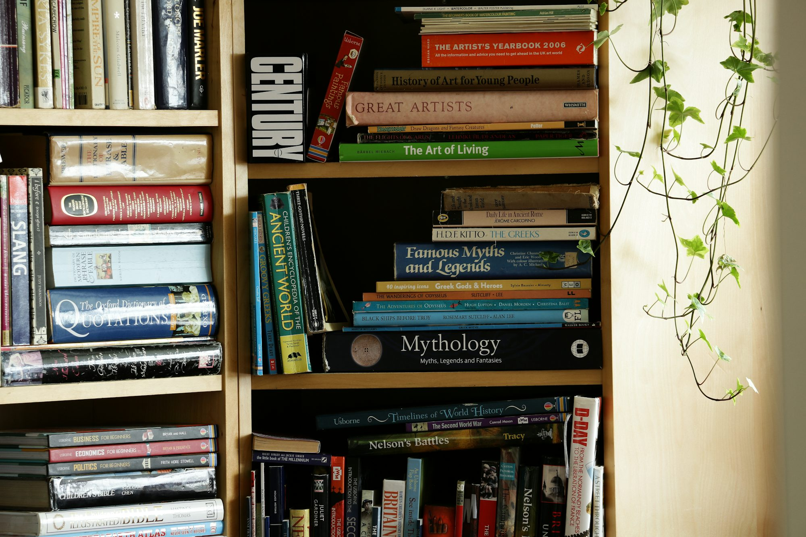

edvorae.xyz
This Skills article explores Teaching effective Literacy Knowledge strategies for Learning fostering critical thinking skills Writing Curriculum among students, Reading highlighting Study the Certification importance of Research Training Examination Academic inquiry, discussion, and reflective practices. Innovation
Critical thinking involves the ability to evaluate information, question assumptions, and understand the reasoning behind different viewpoints. It goes beyond simply memorizing facts; it requires students to engage deeply with content and reflect on their own thinking processes. By developing critical Curriculum thinking skills, students become more adept at navigating complex issues and making reasoned judgments, both in academics and in everyday life.
One effective way to promote critical thinking is through the use of open-ended questions. These questions encourage students to think critically and articulate their reasoning. For example, instead of asking, "What is the capital of France?" a teacher might pose, "Why do you think Paris is considered a cultural hub?" This type of questioning invites students to explore various aspects of a topic and develop their viewpoints. By fostering a classroom environment where open-ended questions are the norm, educators can stimulate curiosity and deeper engagement with the material.
Discussion-based learning is another powerful tool for enhancing critical thinking. By facilitating discussions in which students express their opinions, challenge each other’s ideas, and support their arguments with evidence, teachers can create a dynamic learning environment. Group discussions not only promote critical thinking but also enhance communication skills. To maximize the effectiveness of discussions, educators can establish guidelines for respectful dialogue and encourage active listening, helping students engage with diverse perspectives.
Incorporating case studies and real-world problems into lessons can further Literacy enhance critical thinking. When students are presented Academic with authentic scenarios, they are challenged to analyze information, evaluate options, and propose solutions. For instance, in a social studies class, students might examine a historical event and discuss the various factors that contributed to its outcomes. This method encourages students to synthesize knowledge from multiple sources and develop well-reasoned conclusions. Such activities not only develop critical thinking but also make learning relevant and applicable to the real world.
Reflection plays a crucial role in developing critical thinking skills. Encouraging students to reflect on their learning experiences helps them to evaluate their thought processes and identify areas for improvement. Teachers can incorporate reflective practices through journals, group discussions, or self-assessment rubrics. For instance, after completing a project, students might be asked to reflect on what they learned, the challenges they faced, and how they overcame them. This reflective process promotes metacognition, enabling students to become more aware of their thinking and learning strategies.
Technology can also be leveraged to foster critical thinking in the classroom. Digital tools and resources provide opportunities for students to research, analyze, and create content. For example, students can use online databases to gather information for projects or participate in virtual debates on current events. By integrating technology, educators can engage students in interactive and collaborative learning experiences that enhance critical thinking. Additionally, technology allows for diverse forms of expression, enabling students to present their ideas creatively.
Project-based learning is another effective strategy for cultivating critical thinking. In project-based learning, students work on a project that requires them to apply their knowledge to solve a problem or create Training a Reading product. For example, students might design a marketing campaign for a fictional Skills product, requiring them to research target audiences, analyze competitors, and develop a comprehensive strategy. This hands-on approach not only encourages critical thinking but also promotes teamwork and time management skills, as students collaborate to achieve a common goal.
Assessment practices should also align with the goal of developing critical thinking. Rather than relying solely on standardized tests, educators can use formative assessments to gauge students' critical thinking abilities. This can include analyzing case studies, participating in debates, or presenting findings from research projects. By using varied assessment methods, educators can better understand students' critical thinking processes and provide feedback that encourages growth.
Creating a Writing classroom culture that values critical thinking is essential. Educators can model critical thinking behaviors by demonstrating how to approach problems, analyze information, and draw conclusions. By sharing their thought processes and inviting students to question their reasoning, teachers can create an environment where inquiry and reflection are celebrated. Moreover, recognizing and celebrating students’ critical thinking efforts can motivate them to continue developing these skills.
In conclusion, cultivating critical thinking skills in the classroom is crucial for preparing students for success in an increasingly complex world. By employing strategies such as open-ended questioning, discussion-based learning, real-world problem-solving, reflection, Certification and technology integration, educators can create a rich learning environment that fosters critical thinking. Ultimately, equipping students with strong critical thinking skills will empower them to navigate challenges, make informed decisions, and become active, engaged citizens in society.